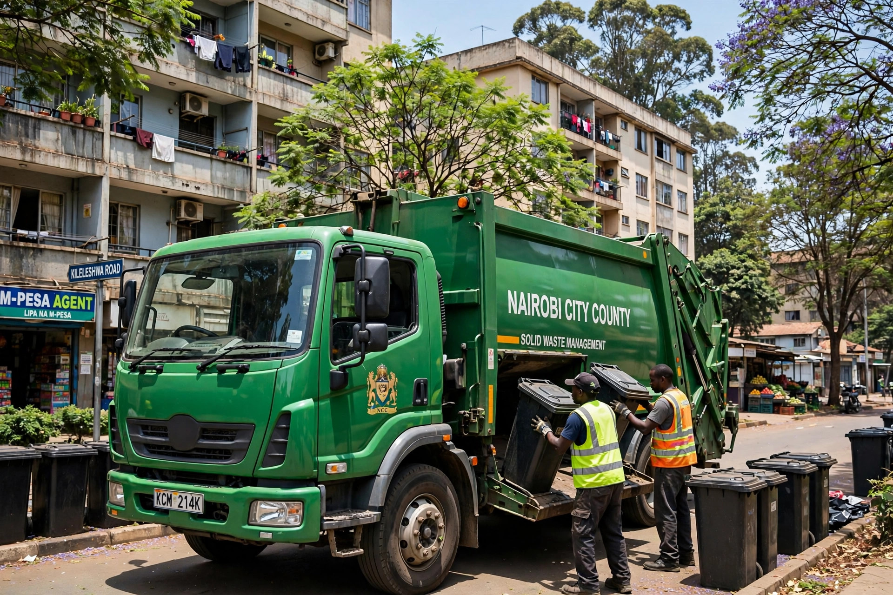

Mwananchi Garbage collects household and business waste across Nairobi, on fixed days, for a fixed monthly price. No waiting for a truck that may not come, and no burning or dumping — everything we collect goes to licensed disposal and recycling sites.

What we collect
How it works
- Choose your plan on the pricing page and book your first collection.
- We deliver your bin and tell you your collection day.
- Put the bin out by 7 a.m. on your day — we empty it and take everything away.